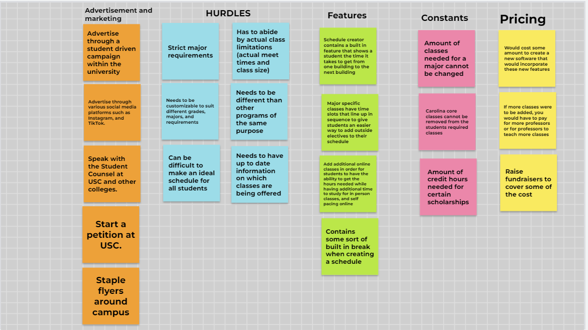
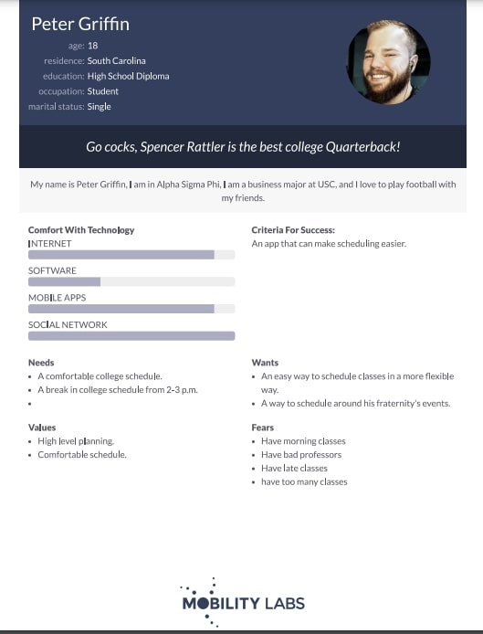
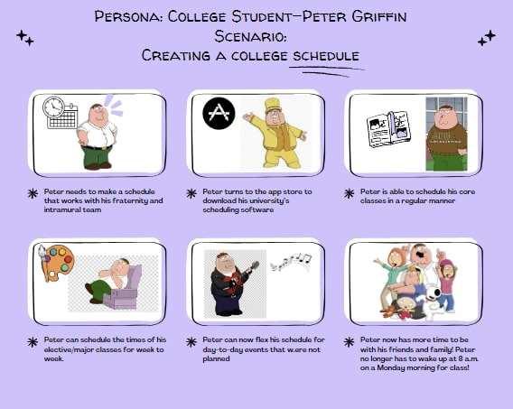
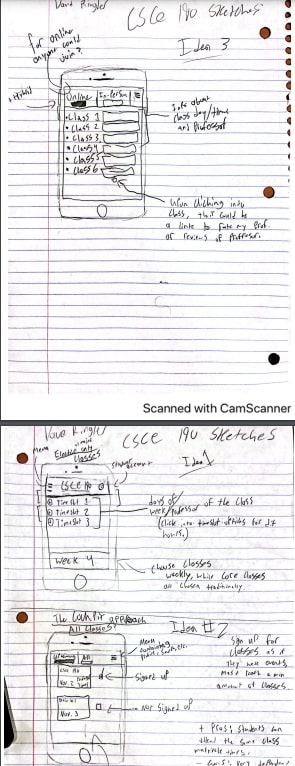
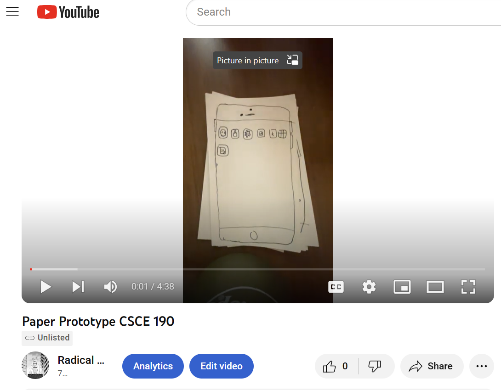

Problem Statement: Un-ideal college schedules
Students deal with rigid, and un-ideal schedules each semester. Group Members: Drew Carter, Dave Ringler, Jadon Kirkland, and Aiden Campbell
Students deal with rigid, and un-ideal schedules each semester. Group Members: Drew Carter, Dave Ringler, Jadon Kirkland, and Aiden Campbell

brainstorm all roadblocks with college schedules.

Peter Griffin: Go cocks, Spencer Rattler is the best college Quarterback!

Peter Griffin, college freshman, makes a flexible schedule so he can be in a fraternity.

A mobile app that has sign up slots weekly, or potentially monthy for students' classes.

A video demoing the prototype for a scheduling app. This app takes inspiration from the Cockpit app, and provides weekly schedules for students to choose from.
[Insert text describing your team high fidelity prototype]